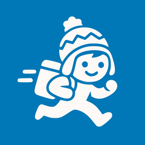
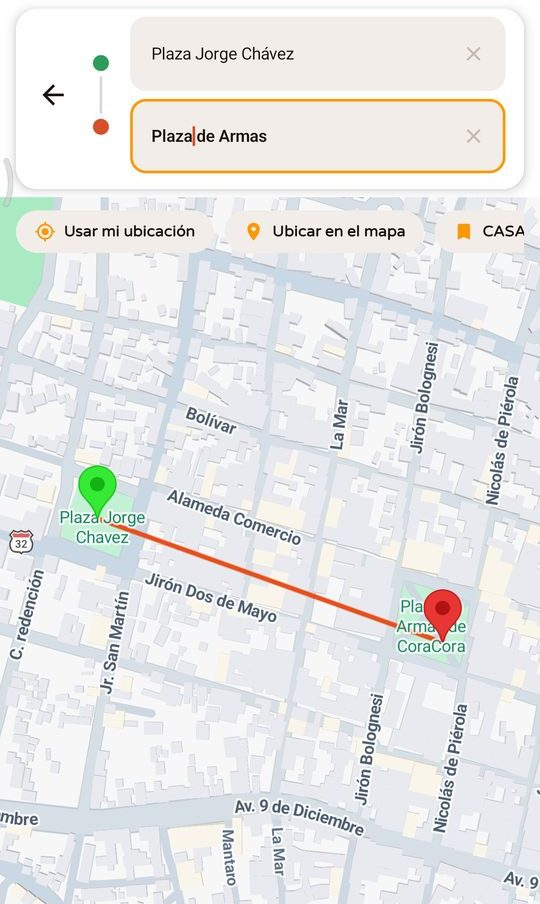

ApuraY
Tu mototaxi y tus pedidos en Coracora.
En provincia nadie iba a venir a hacernos un Rappi, así que lo hicimos nosotros: una app para pedir mototaxi, comida, mercado, licorería, regalos y envíos, que llevan motorizados de la misma ciudad. Empezamos en una ciudad de unos 10 000 habitantes para probar el modelo antes de crecer.
- 12 jul 2026Lanzamiento oficial en Coracora: 108 usuarios nuevos el primer día.
- 1 000+descargas de la app de clientes en Google Play.
- 3 appsClientes, negocios (Mi Tienda AP) y motorizados (PUSAQ, del quechua pusay, guiar).
- Hecha conKotlin y Jetpack Compose, Laravel, Firebase y Google Maps.
